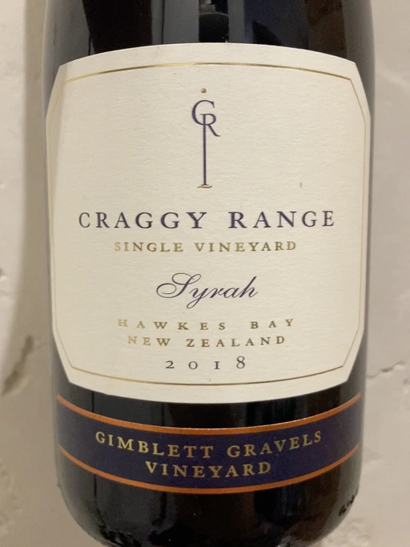

- Type
- Red Still, Dry
- Producer
- Craggy Range
- Vintage
- 2018
- Location
- New Zealand, Hawke’s Bay
- Grapes
- Syrah
- Alcohol
- 13
- Sugar
- 1
- Price
- 901 UAH
- Cellar
- N/A
Ratings
2022-05-31 - 8.00
Amazing, delicate and soft Syrah. Plum, red flowers, condensed milk. Almost perfectly balanced, fresh with good potential, flavour of plum, black pepper, medicinal herbs and oak.